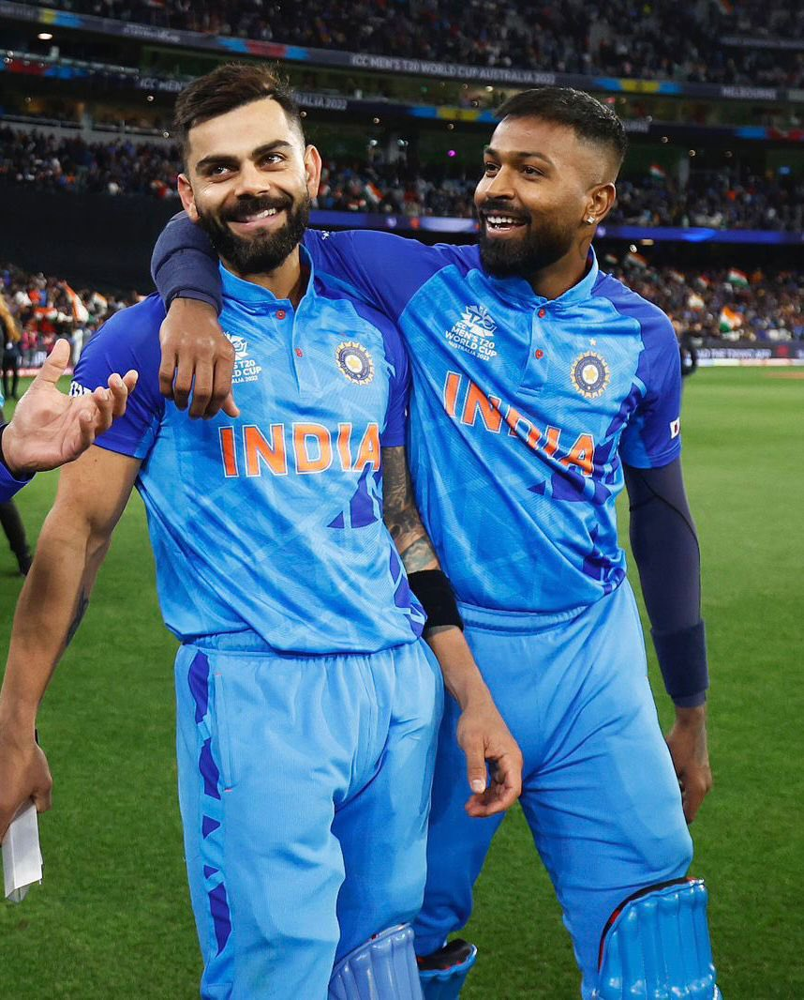

<!DOCTYPE html>
<html lang="en">
<head>
    <meta charset="UTF-8">
    <meta name="viewport" content="width=device-width, initial-scale=1.0">
    <title>Document</title>
</head>
<body>
    <!--  -->
    <!--  -->


    <!-- <blockquote cite="https://en.wikipedia.org/wiki/Hardik_Pandya">Hardik Himanshu Pandya (born 11 October 1993) is an Indian cricketer who is the current vice-captain of the Indian cricket team in limited overs format. A batting all-rounder who can also bowl right-arm fast-medium deliveries, Pandya has represented India in all 3 formats. He currently plays for the Baroda cricket team in domestic cricket and is captain of the Gujarat Titans in the Indian Premier League (IPL) whom he led to their maiden IPL title in the 2022 edition. His elder brother Krunal Pandya is also a professional cricketer.</blockquote> -->


<!-- 
   <bdo dir="ltr">vaghasiya vasu n.</bdo>

   <bdo dir="rtl">vaghasiya vasu n.</bdo> -->


   <!-- <abbr title="vaghasiya vasu n..">vvn</abbr><br> -->

   <!-- <address>
    Name:vaghasiya vasu n.<br>
    location:motavrachha.<br>
    city:surat<br>
    <a href="mailto:vasuvaghasiya10@gamil.com">vasuvaghasiya10@gamil.com</a><br>
    <a href="tel:7621965951">7621965951</a><br>
   </address> -->

   <!-- <q>vaghasiya vasu n....</q> -->
</body>
</html>
